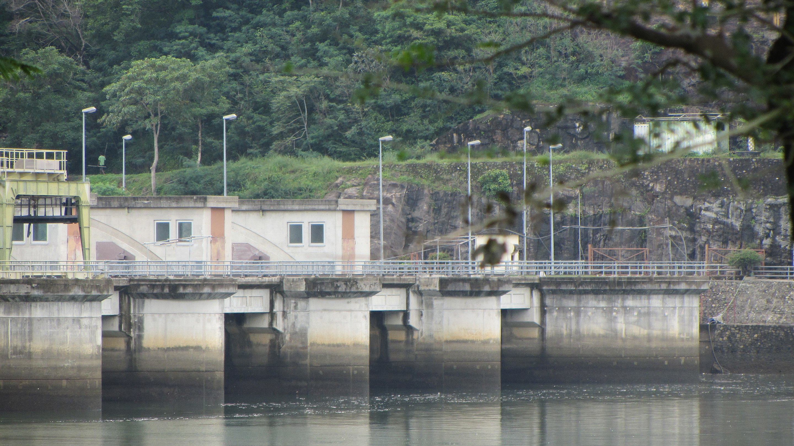
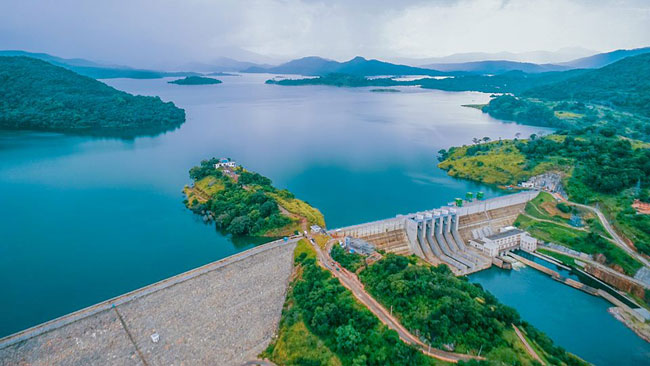
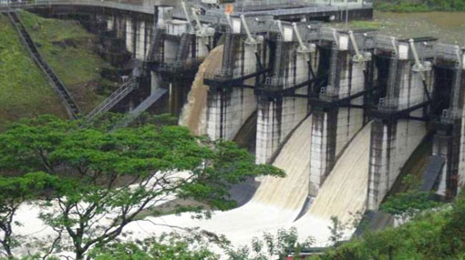
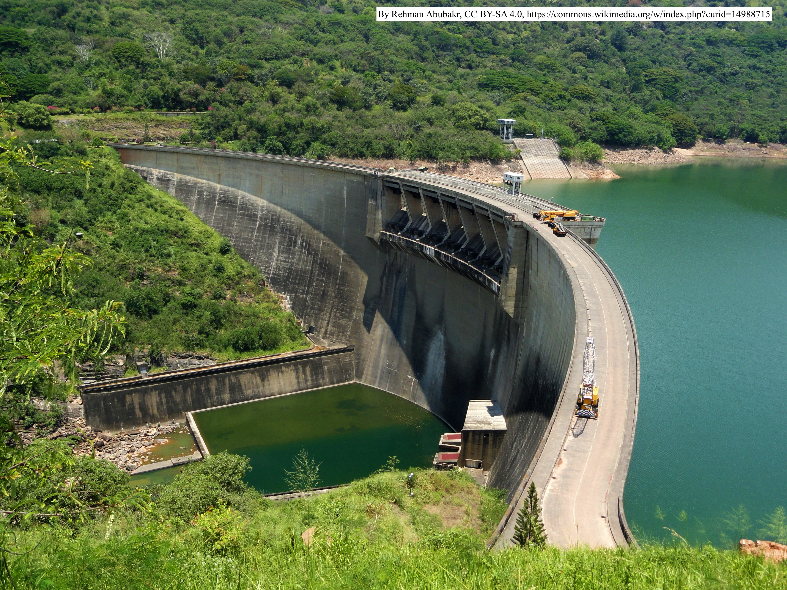
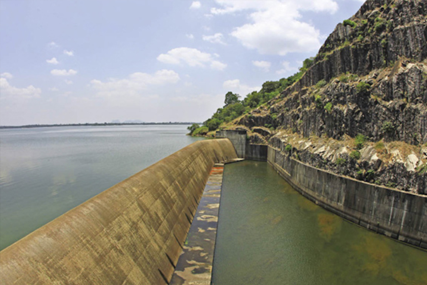

<!DOCTYPE html>
<html lang="en">
<head>
    <link rel="stylesheet" href="https://unpkg.com/leaflet@1.9.4/dist/leaflet.css"
     integrity="sha256-p4NxAoJBhIIN+hmNHrzRCf9tD/miZyoHS5obTRR9BMY="
     crossorigin=""/>
      <!-- Make sure you put this AFTER Leaflet's CSS -->
    <script src="https://unpkg.com/leaflet@1.9.4/dist/leaflet.js"
    integrity="sha256-20nQCchB9co0qIjJZRGuk2/Z9VM+kNiyxNV1lvTlZBo="
    crossorigin=""></script>
    <style>
        #map { position: absolute; height: 100vh; width: 100%; }
    </style>
    <meta charset="UTF-8">
    <meta name="viewport" content="width=device-width, initial-scale=1.0">
    <title>Test Map of Mahaweli Project Dams</title>
</head>
<body>
    <div id="map"></div>
    <script>
        var map = L.map('map').setView([7.384456448832066, 80.94129358807145], 8);
        var osm = L.tileLayer('https://api.maptiler.com/maps/streets-v2/{z}/{x}/{y}.png?key=9ZlnxkRt2oS8TwA1JdFu', {
            attribution: '<a href="https://www.maptiler.com/copyright/" target="_blank">&copy; MapTiler</a> <a href="https://www.openstreetmap.org/copyright" target="_blank">&copy; OpenStreetMap contributors</a>',
        }).addTo(map);

    var marker = L.marker([7.199760227410323, 80.9496234356714]).addTo(map);
    marker.bindPopup("<b>Rantembe</b><br><p>Construction of the dam began in January 1987, and was completed on schedule in April 1990. </p>").openPopup();
    
    var marker = L.marker([7.687868680981341, 80.75496041140842]).addTo(map)
    marker.bindPopup("<b>Moragahakanda Dam</b><br><p>Morgahakanda/Kaluganga project is the last of the Great Mahaveli project. Construction began on 25 January 2007 and was completed in 2018. </p>").openPopup();
    
    var marker = L.marker([7.061034645645261, 80.5968830671945]).addTo(map)
    marker.bindPopup("<b>Kotmale Dam</b><br><p>The dam generates power from three 67 MW turbines, with a total installed capacity to 201 MW, making it the second largest hydroelectric power station in Sri Lanka. Construction on the dam began in August 1979 and was ceremonially completed in February 1985.</p>").openPopup();
    
    var marker = L.marker([7.200196904281342, 80.92499463591382]).addTo(map)
    marker.bindPopup("<b>Randenigala Dam</b><br><p>Construction of the dam began in November 1982, and was completed in approximately 4 years. The dam and power station was ceremonially opened by then President J. R. Jayawardene in 1986.</p>").openPopup();
    
    var marker = L.marker([7.24153603422645, 80.78480910167528]).addTo(map)
    marker.bindPopup("<b>Victoria Dam</b><br><p>Victoria is the tallest dam in Sri Lanka, and supports a 210 MW power station, the largest hydroelectric power station in the country. Funded by aid granted by the UK under the patronage of Queen Elizabeth II. Construction of the dam was inaugurated on 14 August 1978 and completed on 12 April 1985 and ceremonially opened by Margaret Thatcher.</p>").openPopup();
    
    var marker = L.marker([7.648270020310909, 81.214368454886]).addTo(map)
    marker.bindPopup("<b>Maduru Oya Dam</b><br><p>The Maduru Oya Dam is an irrigation dam built across the Maduru Oya. The construction of the dam started in … and it was completed on .</p>").openPopup();
    
    
    </script>
</body>
</html>